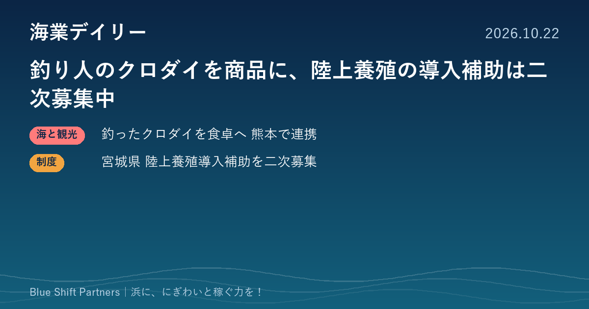

2026.10.22
釣り人のクロダイを商品に、陸上養殖の導入補助は二次募集中

本日は、釣り団体と水産ベンチャーが組んでクロダイを食卓に届ける熊本の取り組みと、宮城県の陸上養殖システム導入補助金の二次募集の2件を取り上げます。厄介者とされてきた魚や、新しい育て方を、浜の稼ぎにつなげる動きです。
釣り人が釣ったクロダイを商品に 熊本で釣り団体・ベンナーズ・農林中金が連携
株式会社ベンナーズ（福岡市）は、熊本県釣り団体協議会と連携し、釣り人が釣り上げたクロダイを活用する取り組みを10月16日に発表しました。水揚げ後にベンナーズが血抜きなどの処理を行い、状態を見極めて加工・商品化し、自社の魚の定期便「フィシュル!」で全国の消費者に届けます。両者の引き合わせは農林中央金庫熊本支店が支援しました。背景には、クロダイによる海藻や養殖ノリの食害、磯焼けへの影響が指摘されていることがあります。
ここがポイント：食害の原因として扱われがちな魚を、釣り人の協力で商品に変える仕組みです。遊漁と地元の水産業をつなぎ、未利用魚を収入源にしたい漁協や自治体にとって、連携の組み立て方の参考になります。
出典：株式会社ベンナーズ（PR TIMES）熊本のクロダイ活用に関するお知らせ（2026-10-16）
宮城県、陸上養殖システム導入の補助金を二次募集中 補助率2分の1・上限1億円
宮城県は、閉鎖循環式の陸上養殖システムを導入して参入しようとする事業者向けの補助金「陸上養殖システム導入支援事業」の二次募集を行っています。県が事業計画を認定した事業者が対象で、一部注水を行う半循環式も含みます。補助率は2分の1以内、上限は1事業者あたり1億円です。県の案内ページでは申請期間を9月4日から11月26日までとしており、活用を希望する場合は申請期間中に県の担当窓口（水産業基盤整備課 養殖振興班）へ連絡するよう求めています。
ここがポイント：要件には、導入予定地区の漁業者との調和や、県内の漁業者・水産加工業者へのメリットが挙げられています。陸上養殖を浜の新しい稼ぎ方として検討する漁協や事業者は、地元との合意づくりも含めて計画を練る機会になります。
出典：宮城県 水産林政部「【二次募集開始】陸上養殖システム導入支援事業（補助金）」（2026-09-04）
海藻を食べてしまう魚も、手間をかければ食卓の一品になります。陸上養殖も、漁業者との調和が補助の要件に入っているように、浜の合意があってこそ稼ぎになります。困りごとと地元の力をどう組み合わせるか、自分たちの浜でも一度書き出してみることをおすすめします。